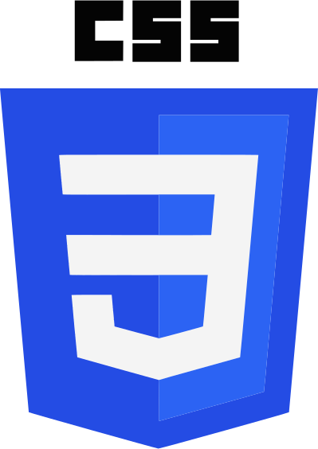
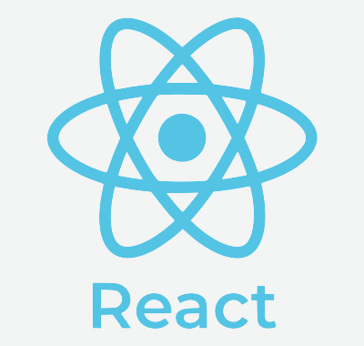
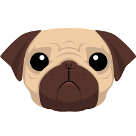

Tengo conocimientos en las siguientes tecnologías
HTML

CSS
JavaSript

React.js
Photoshop
Visual Studio

Pug
Sass
Git
Buenas! Soy Daniel Fontanes 🧔🏻
Soy programador, ayudo a las personas a solucionar problemas que tienen con mi código
Llevo en el mundo de la programación desde 2014 📅
Como podras comrpobar en mi trayectorio he programado: páginas web 🌐, aplicaciones multiplataforma 💻, microcontroladores 🤖, brazos robot 🦾, ...
Si quieres saber mas sobre como puedo ayudarte sigue leyendo 😁
HTML
CSS
JavaSript
React.js
Photoshop
Visual Studio
Pug
Sass
Git
En este proyecto buscaba tener una aplicación que registrara la constancia en los hábitos que te propongas